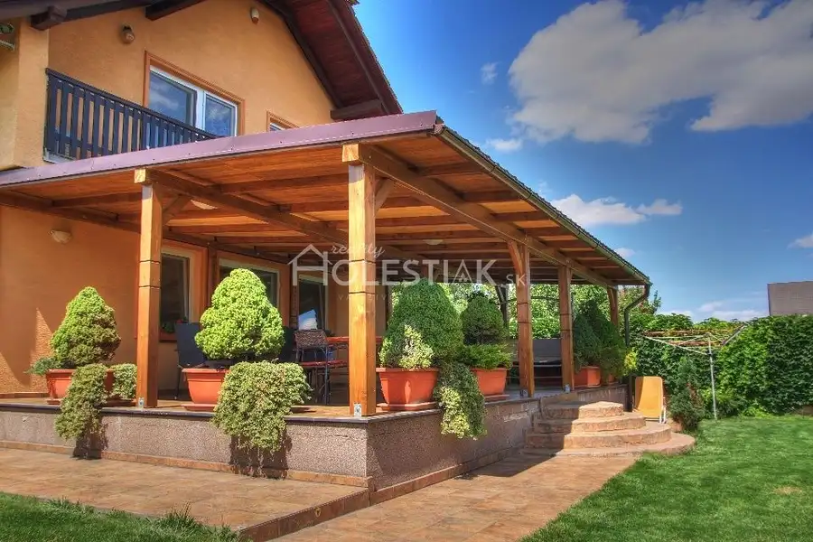

Aktuálna ponuka
5 nehnuteľností, predovšetkým komerčné priestory, chaty a chalupy, pozemky. Každá má vlastnú stránku s fotkami, popisom a mapou.
Prezrieť ponuku
 Tu bude Vaša fotkapošlite ju e-mailom, obratom ju vymeníme
Tu bude Vaša fotkapošlite ju e-mailom, obratom ju vymenímePavol Holeštiak · Realitný maklér · HOLESTIAK.sk reality s.r.o.
Volám sa Pavol Holeštiak, som realitný maklér kancelárie HOLESTIAK.sk reality s.r.o.. Predaj, prenájom a odhad ceny nehnuteľností, lokality Skalité, Zákopčie a Makov.
Viac o mneVolám sa Pavol Holeštiak. Som realitný maklér kancelárie HOLESTIAK.sk reality s.r.o. a pôsobím predovšetkým v lokalitách Skalité, Zákopčie, Makov a Hlboké nad Váhom (Žilinský kraj).
5 nehnuteľností, predovšetkým komerčné priestory, chaty a chalupy, pozemky. Každá má vlastnú stránku s fotkami, popisom a mapou.
Prezrieť ponuku
Skalité, Zákopčie, Makov, Hlboké nad Váhom, Podhájska a okolie. Ponuku si môžete prezrieť podľa lokality.
Nehnuteľnosti v lokalite
Odhad trhovej ceny, príprava prezentácie, obhliadky, zmluvy a odovzdanie nehnuteľnosti.
Dohodnúť stretnutieKomerčné priestoryNové
712 000 €+ Video Predám veľký areál Skalité, reštaurácia, penzión, rodinný dom, servis, stavebné pozemky - exkluzívne
Skalité
620 m²
Záhradná chatkaNové
45 300 €Predám peknú chatku - Zákopčie s väčším pozemkom
Zákopčie
20 m²
Chata, drevenica, zrub
84 000 €Predám chatu v obci Makov na Kysuciach, iba u nás
Makov
52 m²
PozemokNové
Cena na vyžádáníPredám pozemok pod chatu - Hlboké nad Váhom, iba u nás
Hlboké nad Váhom
470 m²

Komerčné priestory 465 000 €Predám pekne zariadený penzión v kúpeľnej obci Podhájska Podhájska 300 m²Tomuto výberu zatiaľ nezodpovedá žiadna ponuka. Napíšte mi, čo hľadáte.
Každý špendlík je jedna nehnuteľnosť z mojej ponuky. Kliknite a pozrite sa.
© prispievatelia OpenStreetMap
Na čo sa pýtate najčastejšie, skôr než sa stretneme.
Odhad trhovej ceny vychádza z aktuálnych ponúk a predajov v lokalite, nie z cenníkových tabuliek. Podmienky Vám poviem pri prvom telefonáte.
Najprv obhliadka a odhad ceny, potom príprava prezentácie (fotografie, popis, inzercia), obhliadky so záujemcami, rezervačná zmluva, kúpna zmluva, návrh na vklad do katastra a odovzdanie nehnuteľnosti. O každom kroku viete vopred.
Najrýchlejšie cez WhatsApp alebo telefón. Termín stretnutia alebo obhliadky dohodneme podľa Vás.